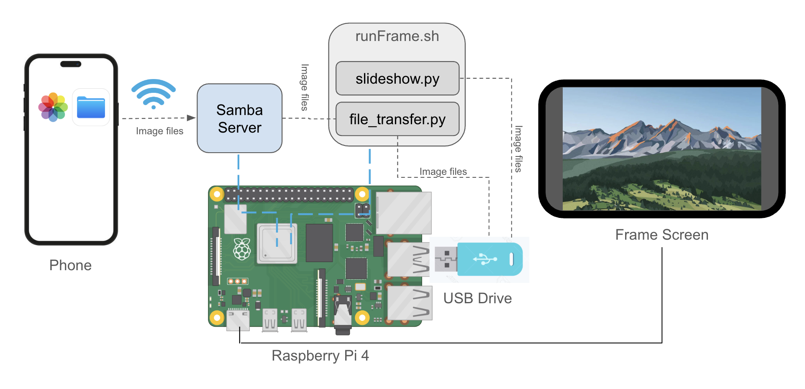

SmartFrame on Raspberry Pi 4
Features
- Full-screen slideshow with cross-fading transitions between images
- Auto-start the slideshow on power-up of Raspberry Pi screen
- SAMBA server hosted on Raspberry Pi to enable easy, wireless transfer of image files from iPhone to SmartFrame without a 3rd party app
- Files are automatically stored on a 256 GB USB drive to ensure adequate space
- Ability to cleanly exit slideshow via ssh on an external computer to simplify software updates
- Detailed logging information in the event of bugs or corrupt/invalid images
- Slideshow reshuffles everytime the frame is turned on so that the order of images is never the same
- New photos added while slideshow is running will get added to the end of the current slideshow, but will then get shuffled into the slideshow after a power cycle
- Slideshow is built on powerful Python library called OpenCV, so the sky is the limit with customization
Inspiration
The inspiration for this project came from looking at several commercial examples of Smart Picture Frames and thinking that I could build one myself from scratch. It also was going to line up well so that I could give the SmartFrame I was going to build to my parents for Christmas. I also happened to be looking for a project that I could do that would involve a Raspberry Pi since I wanted to learn more about the platform. In my previous work role, I had some experience with embedded linux single board computers, so I knew I had the skills to get started, and I wanted to continue developing them. Over the course of about a month, I spent time thinking about how I would reverse-engineer the commercial offerings and how I would want my own version to be built and operated.
The Process
After observing the functionality of commercial smart frame options, I came up with a list of several functional requirements that I wanted my project to satisfy. These were derived from primarily two sources: functionality observed in other frames and the expected needs of my users (my parents). It was by no means an exhaustive list, but it was enough to organize my ideas and provide a source of priorities for features. For example, I had requirements for how the slideshow would look, what types of images would be accepted, how image files should be transferred to the frame, etc. I also wanted to set constraints for the project. For example, I only wanted to work on software for this project, and I wanted to be writing code in Python. This meant that I could spec a plug-and-play screen and do most of my development work in Python.
Once I had defined the main requirements and set the constraints, I had what I needed to begin sourcing my hardware. I knew I wanted a 10 inch screen so that the pictures on the screen would be large enough to see from several feet away. I also knew that I would be using a Raspberry Pi 4, so I just found a 10 inch screen on Amazon made to work with the Rapsberry Pi 4. It even came with a mount point for the Pi on the back of the screen, which was convenient. I also sourced a 256 GB USB drive for storing the pictures on, which ended up being the wrong hardware choice for this application, but more on that later.
I then set up my Raspberry Pi 4 with Raspbian OS since I wanted a GUI desktop for displaying the images, then I set up a user and confirmed I was able to ssh into the Pi from an external computer. After this, I followed the directions to set up the Pi as a Samba server so that I could wirelessly transfer image files from my phone or computer to the Pi on the SmartFrame. Once I had finished this, it was time to code.
Before I began coding, I spent some time thinking about what I wanted the architecture of my programs to be. I knew I would need a program to handle the file transferring and another to run the slideshow. Creating the script for transferring files from the directory used for the Samba server to the mount point directory of the USB drive was relatively simple. The main idea was to have a function that walked through the files in the Samba directory, and if it was a valid image for the slideshow (only .heic/.png/.jgp, no hidden files, etc), move it to the USB directory. This function was then called every 30 seconds in a while loop to ensure continuous monitoring of the Samba server directory. Since the file is moved and not copied, there is no cleanup necessary and the Samba server directory remains uncluttered. Then it was time to create the slideshow script. This one was going to be more complicated. I realized this script would have two main functions: monitor the USB directory for new image files and handle the creation/display of the slideshow. The script needs to monitor the USB directory so that any new files added to the Samba server while the slideshow is running will eventually be transferred to the USB drive and added to the end of the current slideshow so that a power cycle is not needed for new images to appear on the frame. I utilized multi-threading and a global list in order to manage a dynamic list of all the image files that the slieshow could lazy-load while running in order to ensure that the slideshow could begin quickly and run efficiently. I used the Pillow package to load each of the image types and convert .heic images to .jpg so that OpenCV, another package I used, would be able to display them. I then created a quick Bash script and Systemd service that would automate the execution of both Python scripts on boot up of the SmartFrame. The Bash script also keeps track of the PID of each of the Python files and stops both processes should one be killed via ssh (such as in the case of regaining control of the Frame from an external computer).